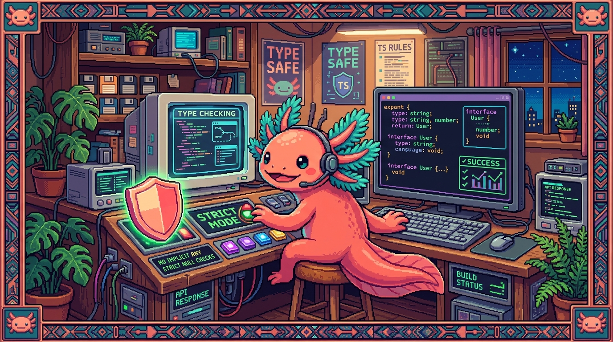

Capítulo 05 — TypeScript en la práctica

Cerramos el módulo viendo cómo TypeScript vive en un proyecto real: su archivo de configuración, el modo "estricto" que usan tus apps, y cómo todo lo aprendido se junta en
RachaSimpleyFaro. Menos sintaxis nueva, más "ver el bosque".
1. El archivo de configuración: tsconfig.json
🟦 ¿Qué significa? —
tsconfig.jsonEs el archivo donde decides cómo se comporta TypeScript en tu proyecto: qué tan estricto quieres que sea, a qué versión de JavaScript traduce tu código, qué carpetas mira. Cada uno de tus repos con TypeScript (RachaSimple, Faro) lleva el suyo en la raíz.
🟦 ¿Qué significa? — El modo estricto (
strict)Cuando pones
"strict": true, activas las comprobaciones más severas de TypeScript: te obliga a tener en cuenta los casosnull/undefined, no te deja colaranyimplícitos, y así con varias reglas más. Al escribir es más exigente, sí, pero a cambio caza muchísimos más errores. Tus dos proyectos lo tienen activado (RachaSimple va un paso más allá y añadenoUncheckedIndexedAccess, una comprobación extra para cuando accedes a listas).json { "compilerOptions": { "strict": true, "target": "ES2022" } }💡 Tip — Estricto desde el día 1
Arrancar un proyecto con
strict: truees como abrocharte el cinturón antes de salir: molesta un segundo y luego te cuida todo el viaje. Activarlo más tarde, cuando el proyecto ya es grande, se convierte en un trabajo enorme. De ahí que lo mejor sea nacer estricto.
2. Cómo se compila y revisa en tus apps
Tranquilo, no vas a ejecutar el compilador a mano: las herramientas se encargan de eso por ti.
🟦 ¿Qué significa? — El flujo en RachaSimple (Vite)
- Mientras desarrollas, Vite (la herramienta de construcción) y tu editor revisan los tipos sobre la marcha: los errores te aparecen subrayados al instante.
- Cuando construyes para producción, el comando
tsc(el compilador de TypeScript) repasa todo el proyecto y se detiene si encuentra un error de tipo, así no publicas código roto.escribes .ts/.tsx → Vite/editor avisan en vivo → build con tsc revisa todo → .js final🔎 En tu código
El
package.jsonde RachaSimple incluye comandos como"typecheck": "tsc --noEmit"(revisa los tipos sin generar ningún archivo) y un"build"que pasatscantes de empaquetar. Funciona como una red de seguridad automática: nada con errores de tipo llega hasta tus usuarios.
3. El panorama: cómo encaja todo
Mira el viaje completo. Un dato en RachaSimple recorre este camino, y TypeScript lo cuida en cada paso:
types/database.ts → define la forma: interface Habito { ... }
│
repositories/habits.ts → funciones tipadas que leen/escriben hábitos en Supabase
│
hooks/useHabits.ts → entrega los hábitos a la interfaz (con TanStack Query)
│
components/HabitCard.tsx → un componente que recibe un 'Habito' y lo muestra
En cada flecha, TypeScript comprueba que la "forma" del hábito se respete. Si alguien cambia la
interface Habito (digamos que renombra nombre a titulo), TypeScript te señala todos los
sitios que hay que tocar. Ahí está lo bueno: el tipo funciona como un contrato que mantiene
coherente toda la app de punta a punta, y por eso los equipos y proyectos serios lo usan.
💡 Tip — Por qué esto te empodera (tu meta original)
Ahora puedes dar órdenes precisas como: "añade a la interface
Habitoun campo opcionalrecordatoriode tipostring, y actualiza el repositorio y la tarjeta para usarlo". Eso es hablarle a tus apps con propiedad, y no quedarte en un "hazme algo con los hábitos". Justo el salto que querías dar cuando empezaste este manual.
4. Resumen del módulo
TypeScript = JavaScript + tipos
├── Por qué: atrapar errores antes (estático, no dinámico) (cap. 01)
├── Tipos básicos, inferencia, arrays, any/unknown, uniones (cap. 02)
├── interface y type: describir la forma de tus datos (cap. 03)
├── Funciones tipadas y, de lejos, los genéricos (cap. 04)
└── tsconfig estricto y cómo encaja en RachaSimple/Faro (cap. 05)
Quédate con esto: TypeScript no es un lenguaje nuevo, es JavaScript con una red de seguridad. A cambio de un poco de esfuerzo extra, tu código se vuelve más seguro, más claro y más fácil de mantener.
✅ Checklist — ¿ya domino esto?
- [ ] Sé qué es
tsconfig.jsony qué hace el modostrict(que usan tus apps). - [ ] Entiendo que Vite/el editor revisan tipos en vivo y
tscrevisa todo al construir. - [ ] Veo cómo una interface mantiene coherente toda la app (de
database.tsa los componentes). - [ ] Puedo formular una orden precisa de cambio sobre los tipos de mis apps.
🧪 Ejercicios
- Estricto. Explica con la analogía del cinturón por qué conviene activar
strictdesde el inicio de un proyecto. - ¿Qué hace tsc? ¿Qué revisa el comando
tsc --noEmity por qué es útil en elbuild? - El contrato. Si renombras una propiedad en la
interface Habito, ¿qué hará TypeScript en el resto del proyecto? ¿Por qué es una ventaja y no una molestia? - Orden precisa. Escribe, en una frase, una instrucción precisa para añadir un campo nuevo a un tipo de tu app y actualizar dónde se usa.
- 💻 Explora tu app. Cuando tengas la computadora, abre
RachaSimple/src/types/database.tsy lee una interface completa (por ejemploHabit). Anota sus propiedades y tipos: ya puedes entenderla toda.
🎉 ¡Terminaste el Módulo 05 — TypeScript! Le sumaste seguridad de tipos a tu JavaScript y ahora puedes leer el código de RachaSimple y Faro. Lo que viene es el módulo más esperado para esas apps: React, donde se construyen las interfaces con componentes.
➡️ Siguiente módulo: 06 — React (en preparación).